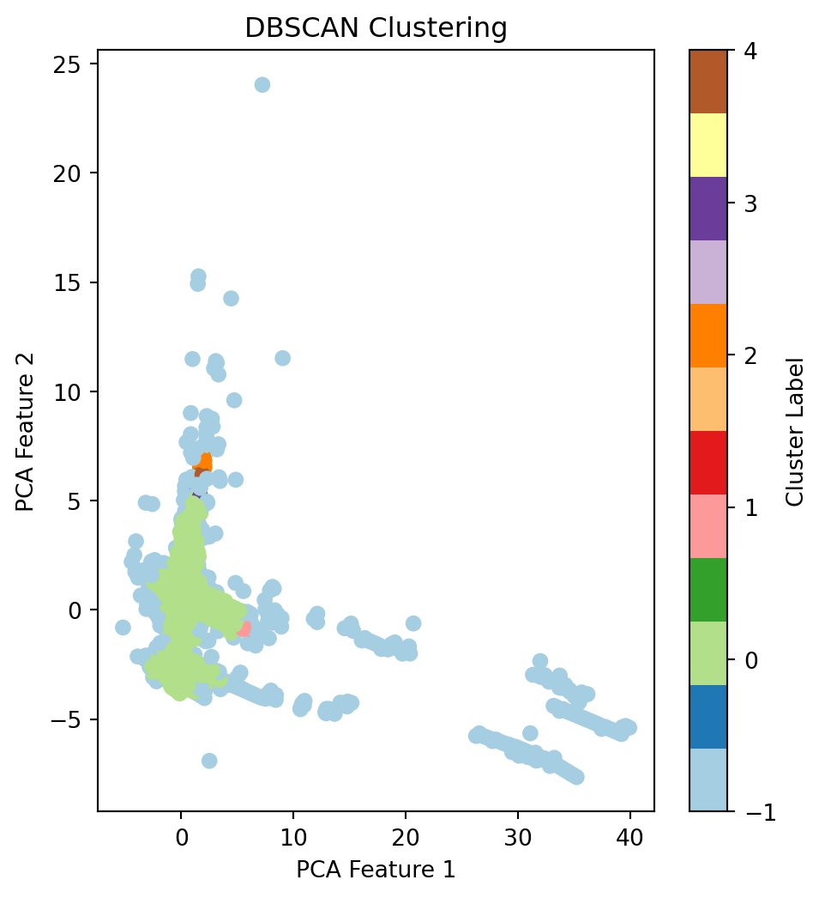
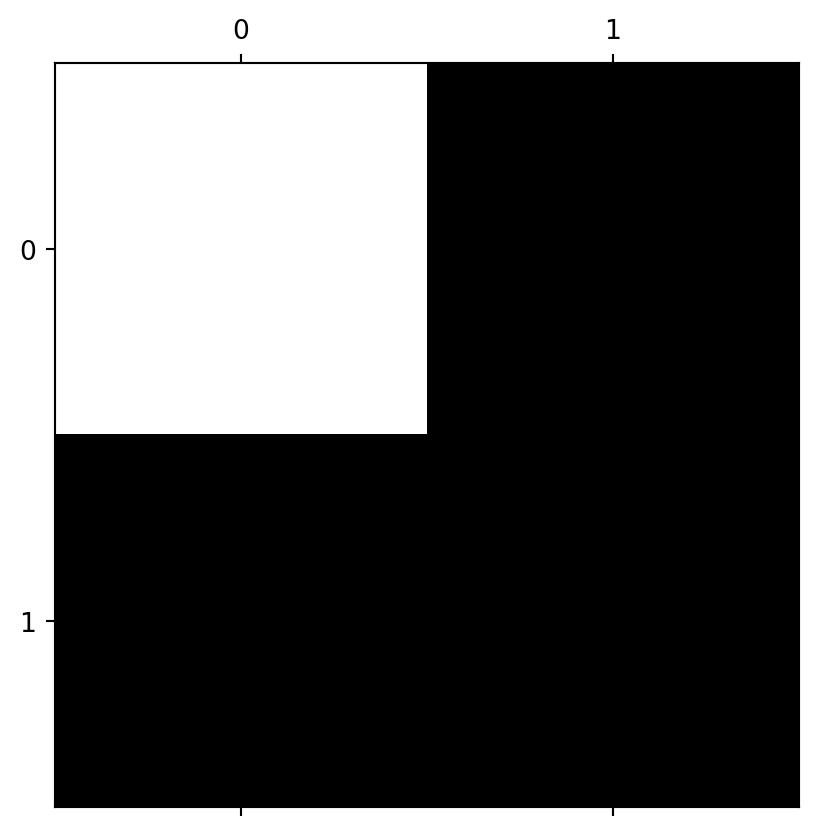

import pandas as pd
import numpy as np
from sklearn.model_selection import train_test_split
from sklearn.preprocessing import StandardScaler
from sklearn.ensemble import RandomForestClassifier
from sklearn.metrics import classification_report, confusion_matrix, accuracy_score
from sklearn.cluster import DBSCAN
from sklearn.decomposition import PCA
import matplotlib.pyplot as plt
from imblearn.over_sampling import SMOTEThis blog is about Anomaly/Outlier Detection. Anomaly/Outlier detection, in simple terms, is like finding the odd ones out in a group. Imagine we have a basket of apples, and most of them are red, but a few are green. In this case, the green apples are the outliers because they’re different from the majority, which are red.
In the world of data and statistics, outlier detection works in a similar way. It’s the process of identifying data points that are significantly different or unusual compared to the rest of the data. Think of it as spotting something that doesn’t quite fit in with the rest.
Anomaly or outlier detection in machine learning is a process aimed at identifying data points, events, or observations that deviate significantly from the majority of the data. These anomalies can indicate critical incidents, such as bank fraud, structural defects, medical problems, or errors in text. Anomaly detection is widely used in various fields like finance, healthcare, fault detection, system health monitoring, event detection in sensor networks, and eco-informatics.
Outlier detection is important because these unusual data points can sometimes indicate a problem or an error, like a mistake in measurement, or they could be a sign of something interesting and worth exploring further, like a new trend.
There are three types of anomalies:
- Point Anomalies: A single instance of data is anomalous if it’s too far off from the rest. This is the simplest type of anomaly and is common in fraud detection.
- Contextual Anomalies: Anomalies that depend on the context of a situation. This is common in time-series data where a data point might be anomalous in a certain context but not otherwise.
- Collective Anomalies: A collection of data points is anomalous with respect to the entire dataset. This is common in intrusion detection or ecosystem disturbances.
Task Demo
In this task, I utilize the anomaly/outlier detection technology to detect the fraud in credit card. I adopt the Credit Card Fraud Detection from Kaggle. I use supervised learning to train a outlier detection model and detect the anomaly.
# Load the dataset
df = pd.read_csv('dataset/creditcard.csv')
df.head()| Time | V1 | V2 | V3 | V4 | V5 | V6 | V7 | V8 | V9 | ... | V21 | V22 | V23 | V24 | V25 | V26 | V27 | V28 | Amount | Class | |
|---|---|---|---|---|---|---|---|---|---|---|---|---|---|---|---|---|---|---|---|---|---|
| 0 | 0.0 | -1.359807 | -0.072781 | 2.536347 | 1.378155 | -0.338321 | 0.462388 | 0.239599 | 0.098698 | 0.363787 | ... | -0.018307 | 0.277838 | -0.110474 | 0.066928 | 0.128539 | -0.189115 | 0.133558 | -0.021053 | 149.62 | 0 |
| 1 | 0.0 | 1.191857 | 0.266151 | 0.166480 | 0.448154 | 0.060018 | -0.082361 | -0.078803 | 0.085102 | -0.255425 | ... | -0.225775 | -0.638672 | 0.101288 | -0.339846 | 0.167170 | 0.125895 | -0.008983 | 0.014724 | 2.69 | 0 |
| 2 | 1.0 | -1.358354 | -1.340163 | 1.773209 | 0.379780 | -0.503198 | 1.800499 | 0.791461 | 0.247676 | -1.514654 | ... | 0.247998 | 0.771679 | 0.909412 | -0.689281 | -0.327642 | -0.139097 | -0.055353 | -0.059752 | 378.66 | 0 |
| 3 | 1.0 | -0.966272 | -0.185226 | 1.792993 | -0.863291 | -0.010309 | 1.247203 | 0.237609 | 0.377436 | -1.387024 | ... | -0.108300 | 0.005274 | -0.190321 | -1.175575 | 0.647376 | -0.221929 | 0.062723 | 0.061458 | 123.50 | 0 |
| 4 | 2.0 | -1.158233 | 0.877737 | 1.548718 | 0.403034 | -0.407193 | 0.095921 | 0.592941 | -0.270533 | 0.817739 | ... | -0.009431 | 0.798278 | -0.137458 | 0.141267 | -0.206010 | 0.502292 | 0.219422 | 0.215153 | 69.99 | 0 |
5 rows × 31 columns
# Data preprocessing
# Truncate the dataset, use the first 50,000 rows
df_truncated = df.head(50000)
df = df_truncated
X = df.drop('Class', axis=1)
y = df['Class']# Feature scaling
scaler = StandardScaler()
X_scaled = scaler.fit_transform(X)
# Dimensionality Reduction for Visualization
pca = PCA(n_components=2)
X_pca = pca.fit_transform(X_scaled)
# Apply DBSCAN
dbscan = DBSCAN(eps=0.3, min_samples=10)
clusters = dbscan.fit_predict(X_pca)# Scatter Plot before Model Prediction
plt.figure(figsize=(12, 6))
plt.subplot(1, 2, 1)
plt.scatter(X_pca[:, 0], X_pca[:, 1], c=clusters, cmap='Paired', marker='o')
plt.title('DBSCAN Clustering')
plt.xlabel('PCA Feature 1')
plt.ylabel('PCA Feature 2')
plt.colorbar(label='Cluster Label')<matplotlib.colorbar.Colorbar at 0x1b04bdb5810>
# Splitting the dataset into the Training set and Test set
X_train, X_test, y_train, y_test = train_test_split(X_scaled, y, test_size=0.2, random_state=0)
# Handling imbalanced data
sm = SMOTE(random_state=2)
X_train_res, y_train_res = sm.fit_resample(X_train, y_train.ravel())# Training the Random Forest model
classifier = RandomForestClassifier(n_estimators=100, random_state=0)
classifier.fit(X_train_res, y_train_res)RandomForestClassifier(random_state=0)In a Jupyter environment, please rerun this cell to show the HTML representation or trust the notebook.
On GitHub, the HTML representation is unable to render, please try loading this page with nbviewer.org.
RandomForestClassifier(random_state=0)
# Predicting the Test set results
y_pred = classifier.predict(X_test)
# Evaluating the model
print("Confusion Matrix:")
print(confusion_matrix(y_test, y_pred))
print("\nClassification Report:")
print(classification_report(y_test, y_pred))
print("Accuracy Score:", accuracy_score(y_test, y_pred))
# Plotting the confusion matrix
cm = confusion_matrix(y_test, y_pred)
plt.matshow(cm, cmap=plt.cm.gray)
plt.show()Confusion Matrix:
[[9965 2]
[ 7 26]]
Classification Report:
precision recall f1-score support
0 1.00 1.00 1.00 9967
1 0.93 0.79 0.85 33
accuracy 1.00 10000
macro avg 0.96 0.89 0.93 10000
weighted avg 1.00 1.00 1.00 10000
Accuracy Score: 0.9991
The results show that the model performs well. The confusion matrix indicates a low number of false positives and false negatives, and the model also exhibits a high accuracy rate.